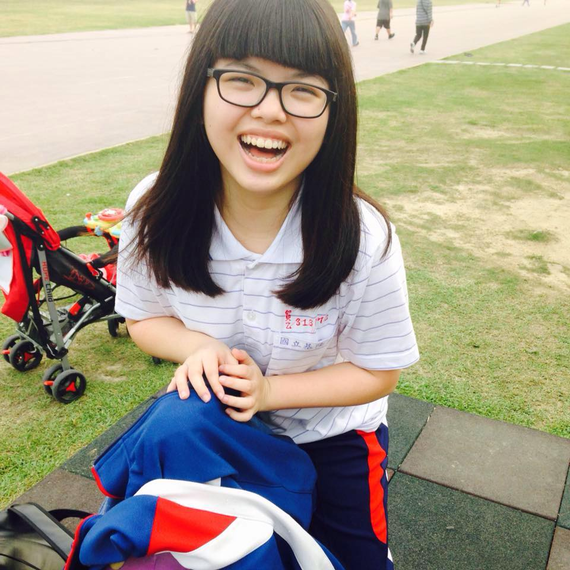
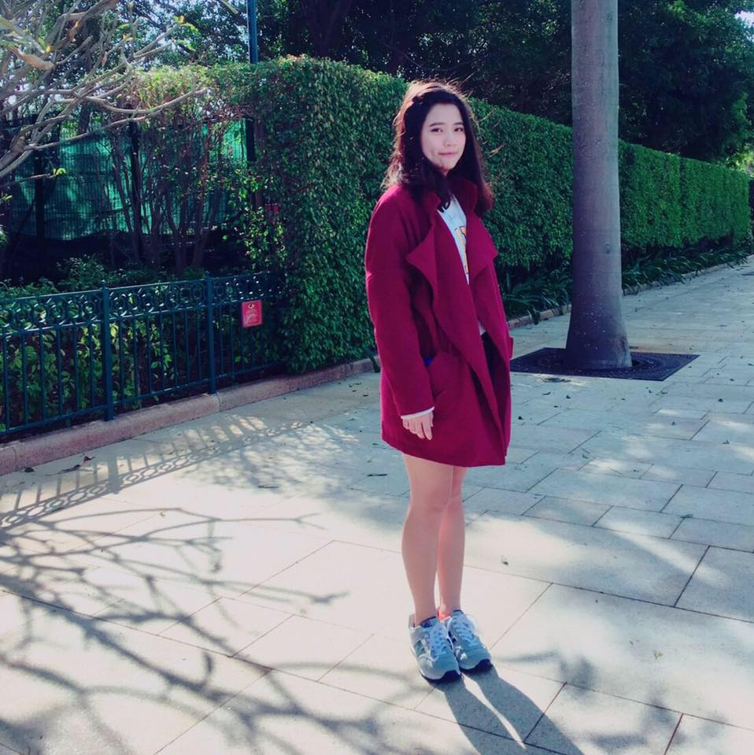
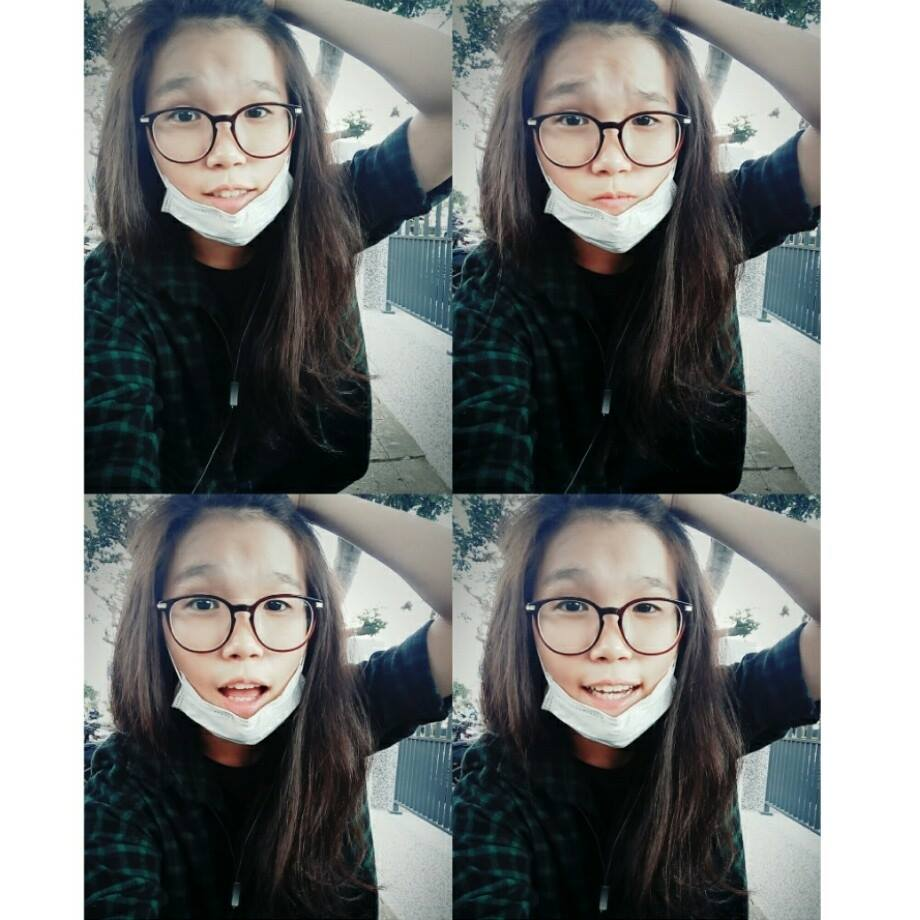
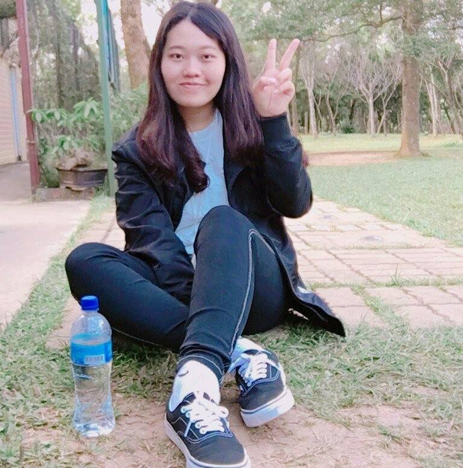
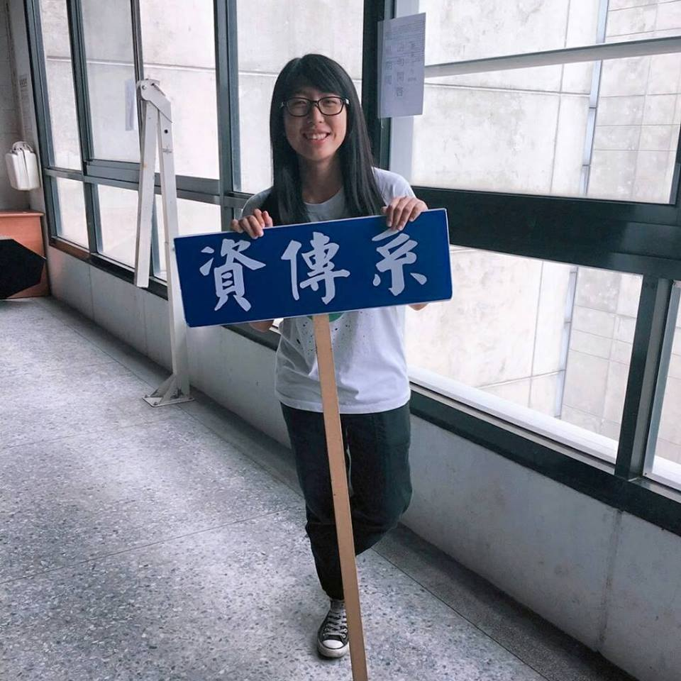

在別人眼中
| 家人(妹妹) |  | 有自己的想法，很獨立，可是笑點很低哈哈哈哈 |
|---|---|---|
| 蘇詩淳 | ||
| 謎之聲 | 是覺得笑點很低接在有自己想法後面很沒道理啦~_~ | |
| 國中認識的朋友 |  | 矮，看起來很呆可是很有想法 |
| 劉雅雯 | ||
| 謎之聲 | 矮還需要說? | |
| 高中認識的朋友 |  | 個性很直，有老大風範 |
| 高郁婷 | ||
| 謎之聲 | 我看只有你把我當老大<3 | |
| 大學認識的朋友 | 每天不去洗澡的臭傢伙 | |
| 陳佳妤 | ||
| 謎之聲 | 嗯...我最後都還是有去洗嘛 | |
|  | 吵架一定要吵贏的人 | |
| 洪英慈 | ||
| 謎之聲 | 好。 | |
|  | 講話太直 | |
| 陳蘊儒 | ||
| 謎之聲 | 好的我會改進，對不起系會長 |